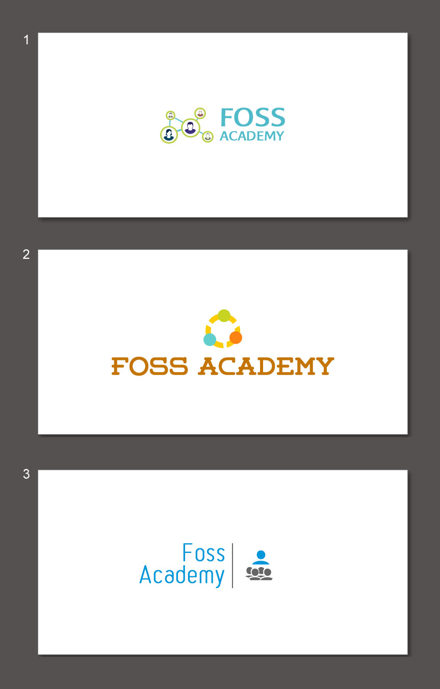

What i have been upto last few months !!
Posted by satya in community, Contribute, contributions, FOSS, hackathon, Opendata, Personal, privacy, python, social
Data.gov.in. is and was a fun place to work the project in pursuit of an 'idea' was conceived packed and delivered with a short time frame of May-August . Overall the takes from the projects are the team is amazing to work with , with in few days i was ...
Who is a FOSS contributor and how her/his life should be celebrated
Posted by satya in community, Education, FOSS, social
Over the last two decades i had the privilege to learn and teach many
people from the Foss community . one of the mantras i learned from
Adempierecommunity especially from
Redhuan D. Oon is where he defines and
consolidates what a community means to him in three lines.
<< A NEW ...
12th plan Hackathon a report
Posted by satya in community, hackathon, Opendata, social
Planning Commision in Collaboration with NIC especially the Data.gov.in Team ( which is setup according to the NDSAP guildelines) organized a Hackathon to hack the 12th five year plan for those of who are not aware like most of us Five years plans in India are economic blueprints from ...
Datagov.in Hackathon for 12th Five Year Plan
Posted by satya in hackathon, Opendata, social
Data.gov.in is organizing a Hackathon for 12th five year plan .
all the sectors and datasets will be announced on 6th April , also the overall rules , the person to talk to more about the queries would be one Ms Keerthika she can be reached on klkala at gmail.com ...
First bite of data.gov.in datasets
We turned up at the announced event through the facebook events page, had no clue who the organizers were and the place we were going to . The page just mentioned about telling stories with data. Staying with the open data community i had a clue of what was coming , but ...
Logos for Fossacademy.org
Few Logos i got from people around let me know which one of them you like through comments to this post.
Got the Logo Done for fossevents.in
Posted by satya in community, Contribute, contributions, FOSS, social

Got the above logo done by posting for a volunteer job on jobs.hasgeek.com , with in a day of posting i got a very good response the best presentation and entry was from spurline , it had a concept too it said " For me, FOSS events have always being about ...
Newcomer experience and contributor behavior in FOSS communities
Posted by satya in community, Contribute, FOSS, social, Uncategorized
Kevin Carillo has come out with a Survey to measure Newcomer experience for people who have joined and any of the Debian, FreeBSD (including PC-BSD), GNOME, Gentoo, **KDE, Mozilla, Ubuntu, NetBSD, or OpenSUSE ** in last three years.
The survey is available here ,The good thing about this survey is it ...
MOOC and Education
Posted by satya in Contribute, Education, fossacademy
Education and learning are terms used synonymously , i agree with Seymour Papert and the people who have been influenced over decades by his writings.
last few years i have been seeing a lots of buzz around the word MOOC , just few years before the term like Elearning had a similar ...